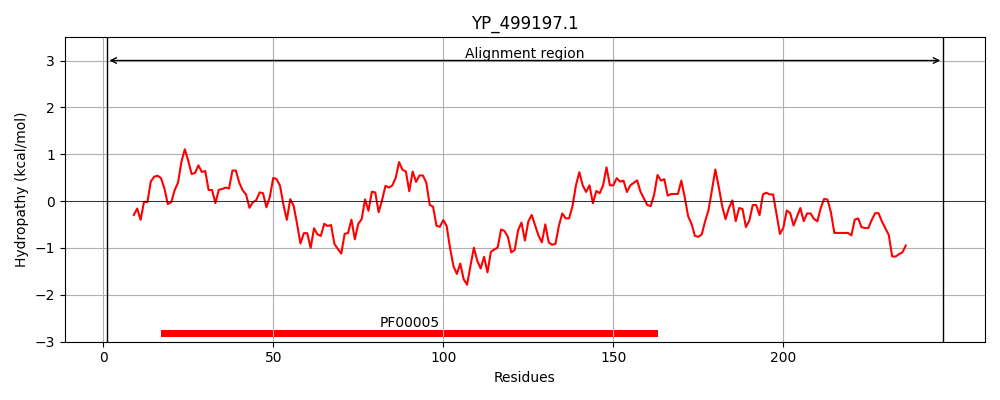
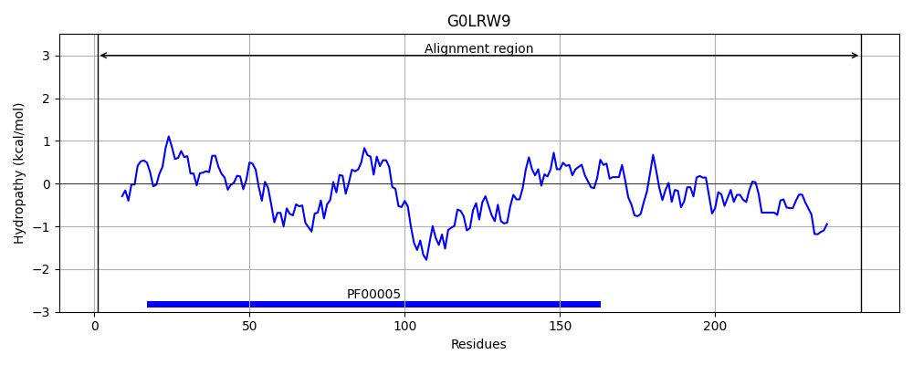
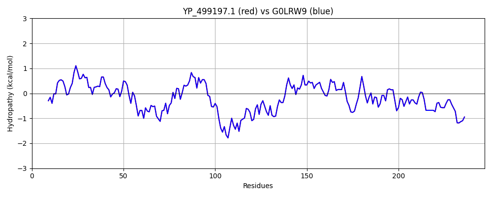

Hit Accession: G0LRW9
Hit TCID: 3.A.1.15.15
Hit Description: gnl|BL_ORD_ID|4559 gnl|TC-DB|G0LRW9|3.A.1.15.15 ABC transporter ATP-binding protein OS=Staphylococcus aureus subsp. aureus LGA251 GN=mntA PE=3 SV=1
Mach Len: 247
e:0.000000
Query TMS Count : 0
Hit TMS Count: 0
TMS-Overlap Score: 0.000000
Predicted Substrates:CHEBI:29035;manganese(2+)
BLAST Alignment:
Score: 1249 , Bit scores: 485 bits, E-value: 6.2e-177, Alignment length: 247, Percentage identity: 100
Query: 1 MLETKDLNLFLGNKHVLKNISLSIPVRGEIIGIMGPNGAGKSSLIKSLIGEFNATGTKLLYNKPIQQQLQHITYIPQKAHIDLDFPISVEQVILSGCYKEIGWFRRPNKSARDKLKQLLSDLELESLRHRQISELSGGQLQRVLVARALMSESEVYFLDEPFVGIDFSSEKLIMTKIENLKQQGKLILIIHHDLSKAKQYFDRIILLNQTLRYFGDSEEAMSVTRLNETFMSSTDCSDPSQRSNITC 247
MLETKDLNLFLGNKHVLKNISLSIPVRGEIIGIMGPNGAGKSSLIKSLIGEFNATGTKLLYNKPIQQQLQHITYIPQKAHIDLDFPISVEQVILSGCYKEIGWFRRPNKSARDKLKQLLSDLELESLRHRQISELSGGQLQRVLVARALMSESEVYFLDEPFVGIDFSSEKLIMTKIENLKQQGKLILIIHHDLSKAKQYFDRIILLNQTLRYFGDSEEAMSVTRLNETFMSSTDCSDPSQRSNITC
Sbjct: 1 MLETKDLNLFLGNKHVLKNISLSIPVRGEIIGIMGPNGAGKSSLIKSLIGEFNATGTKLLYNKPIQQQLQHITYIPQKAHIDLDFPISVEQVILSGCYKEIGWFRRPNKSARDKLKQLLSDLELESLRHRQISELSGGQLQRVLVARALMSESEVYFLDEPFVGIDFSSEKLIMTKIENLKQQGKLILIIHHDLSKAKQYFDRIILLNQTLRYFGDSEEAMSVTRLNETFMSSTDCSDPSQRSNITC 247 | Protein Hydropathy Plots: |
|---|
|  |  |
Pairwise Alignment-Hydropathy Plot:
|
|---|
|  |